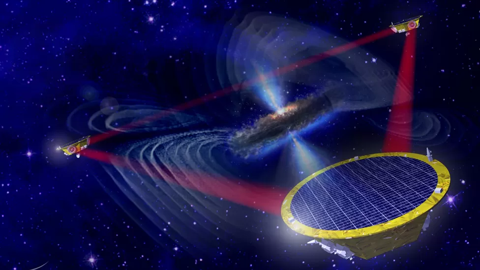

Gravitational waves have been detected for the first time

The first direct detection of gravitational waves is without doubt one of the most remarkable breakthroughs of our time. The Advanced LIGO laboratories in the US states of Washington and Louisiana have traced the warping of space from the merger of two black holes about 1.3 billion light-years from Earth.